凤凰与基础九尾狐 · 模型、像素UV与专用动作
本轮只处理未精修的基础九尾狐和凤凰，已认可的白面狐仙姑、麒麟、年兽及其他批次不动。这里全部是原生ModelPart离线预览，不是实机截图。两只的注册、碰撞、技能和伤害不改。
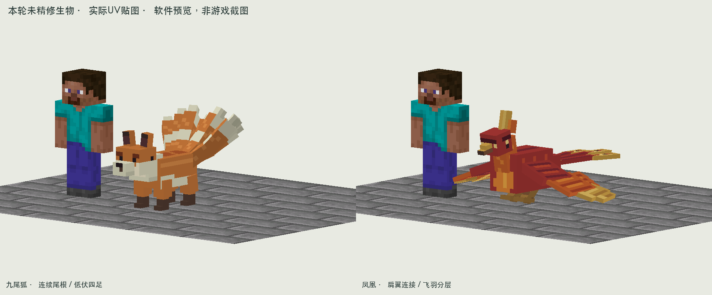
基础九尾狐
参考Alex’s Mobs鬃狼的躯干／足端分区、暮色森林兔与松鼠的简洁大色块、Critters and Companions雪貂的长身与口鼻衔接。改成连贯狐吻、腹下负形、四足和九根有父子关系的尾部；暖棕背毛、浅腹、深足和尾尖保持身份。九尾摆动不再独立漂浮，迈步分对角，攻击前压集中在颈部。
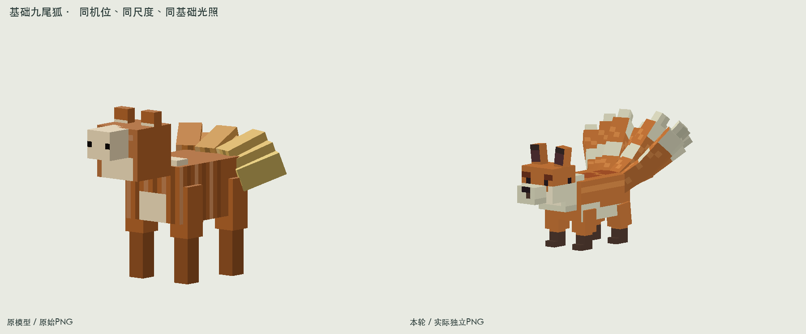
修改前后：同机位、同尺度、同基础光照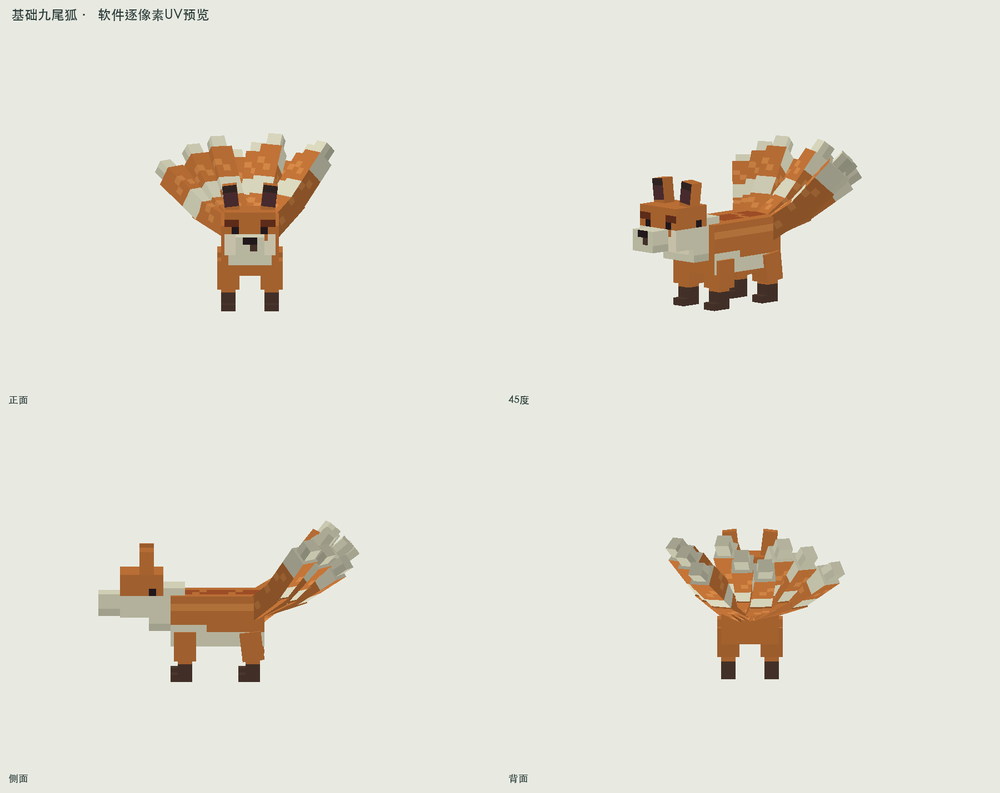
正面、45度、侧面、背面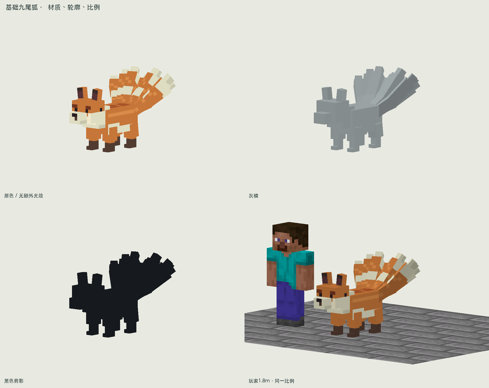
原色、灰模、剪影、玩家比例完整原生骨骼回放
每种状态0–78 tick、40帧。显示实际PNG和原生顶点；自然战斗与客户端光照仍待实机复核。
原始PNG、4倍最近邻、UV与方向检查、近景
实际128×128 PNG · 生成源模型数据
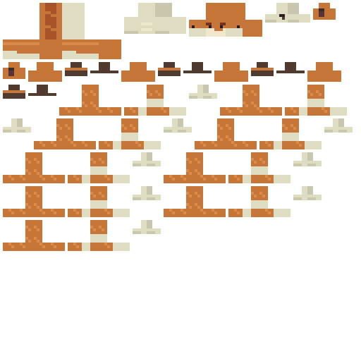
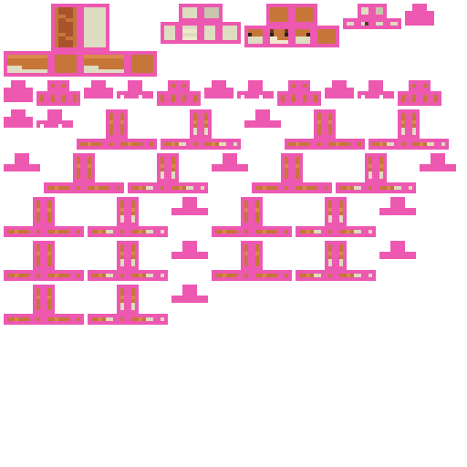
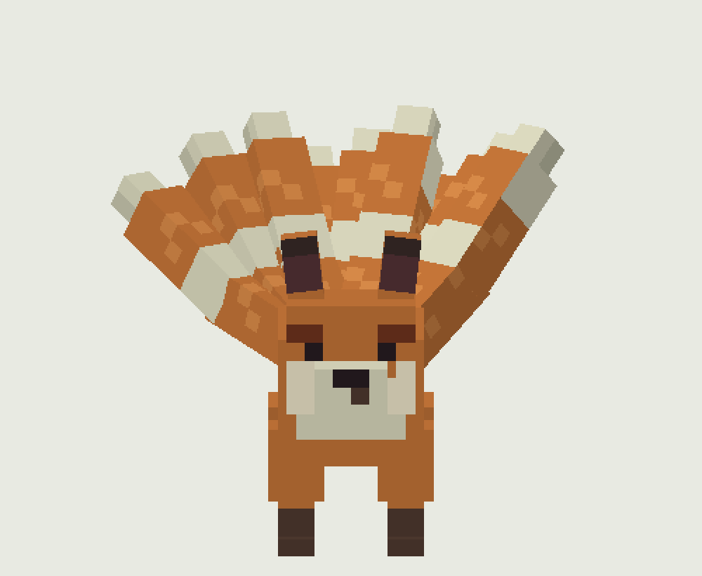
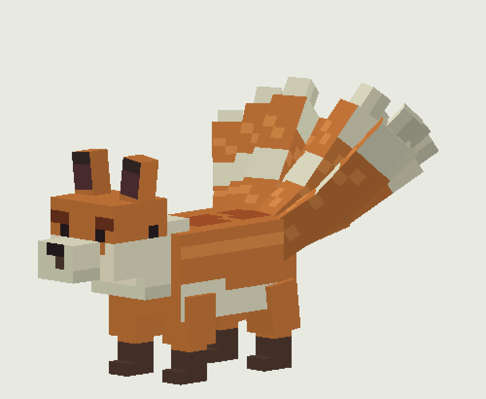
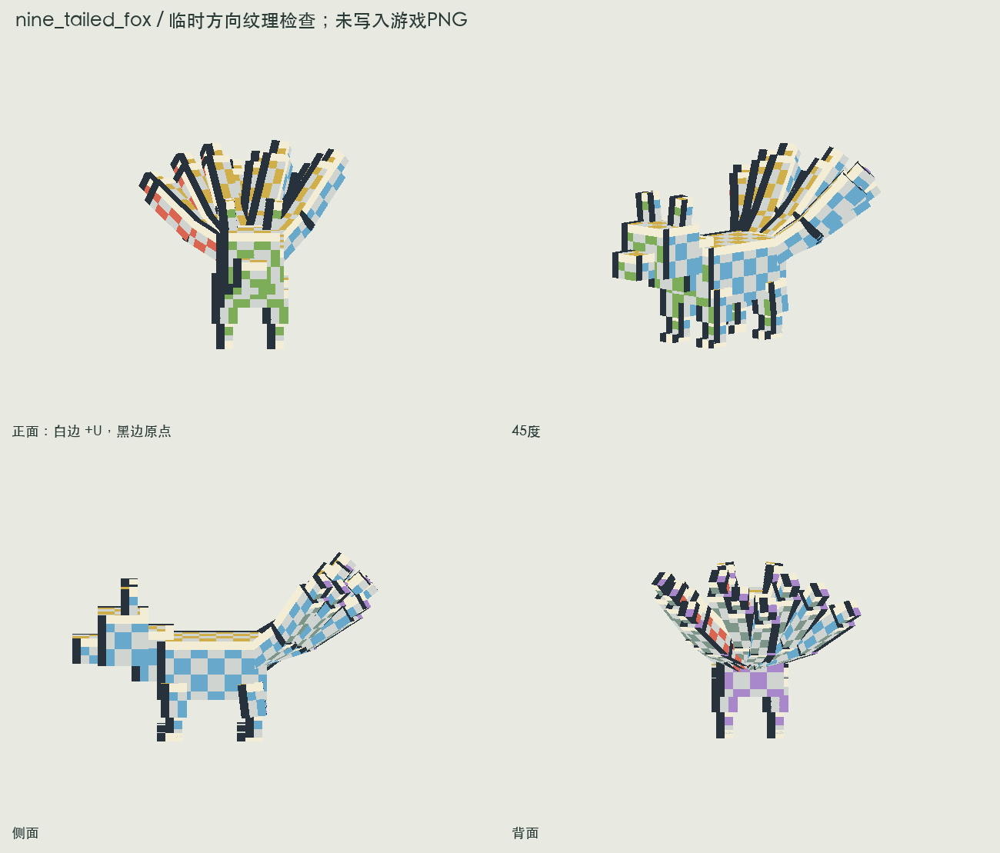
方向检查图只用于离线验证，正式PNG没有测试棋盘。
凤凰
参考Frikinzi’s Fauna金雕、红鸢与鱼鹰的翼根／前翼／飞羽连接，以及虹雉和雉鸡的冠、颈胸与长尾色区。凤凰保持原赤金主题，重画胸腹与飞羽方向；翼段继承运动，飞羽延迟跟随，落地向后收翼；修复第一版落地翼尖穿地和重叠闪面。
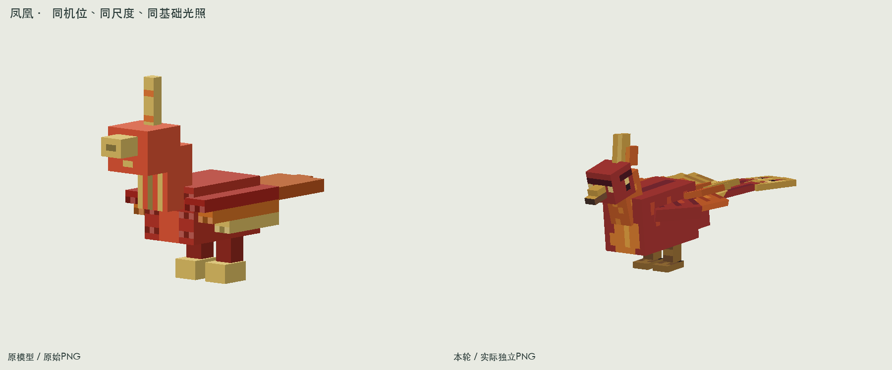
修改前后：同机位、同尺度、同基础光照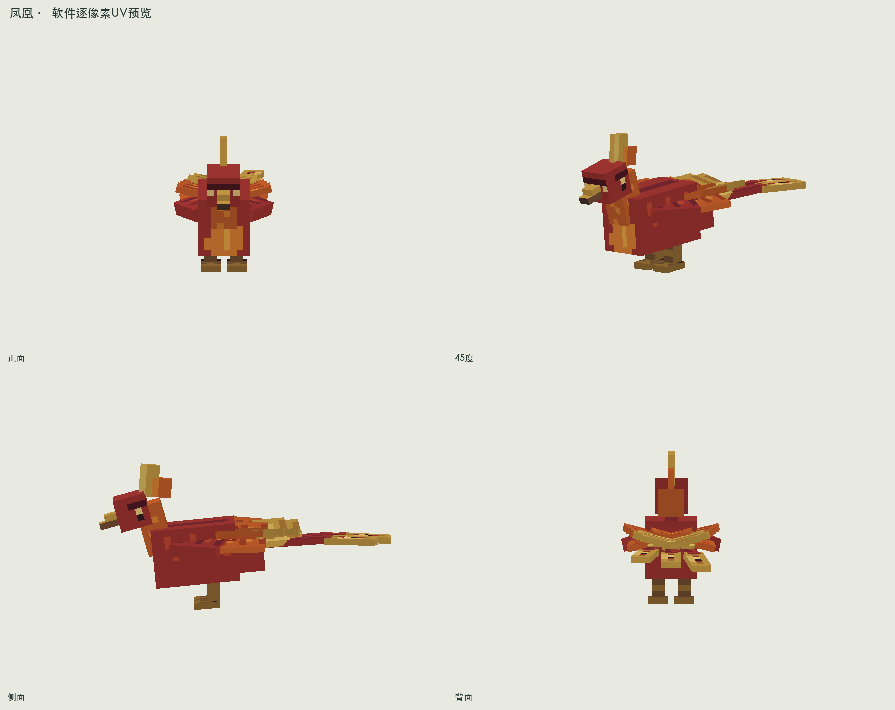
正面、45度、侧面、背面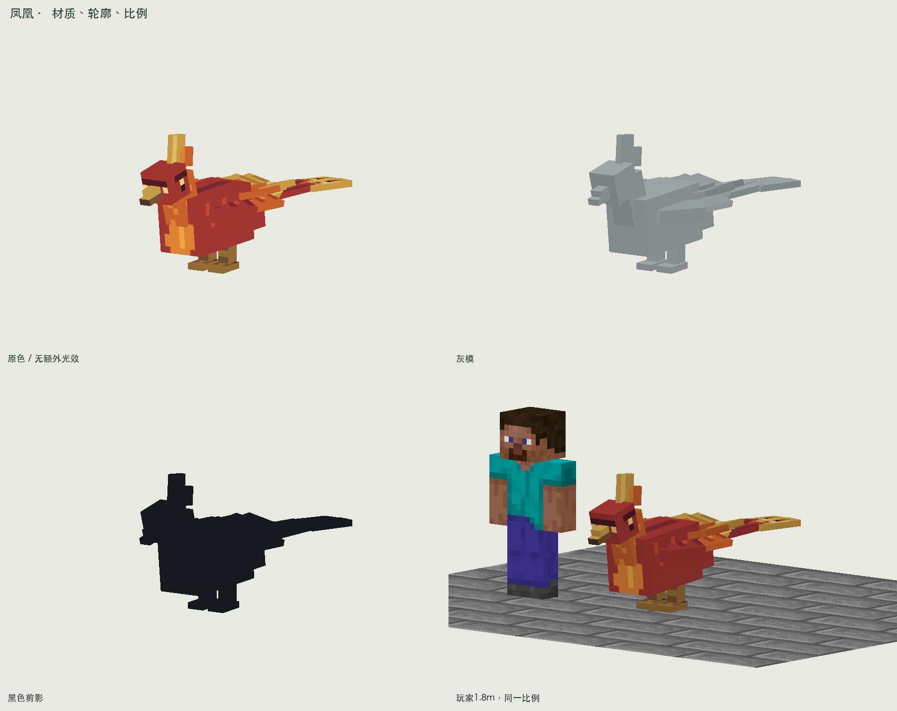
原色、灰模、剪影、玩家比例完整原生骨骼回放
每种状态0–78 tick、40帧。显示实际PNG和原生顶点；自然战斗与客户端光照仍待实机复核。
原始PNG、4倍最近邻、UV与方向检查、近景
实际128×128 PNG · 生成源模型数据
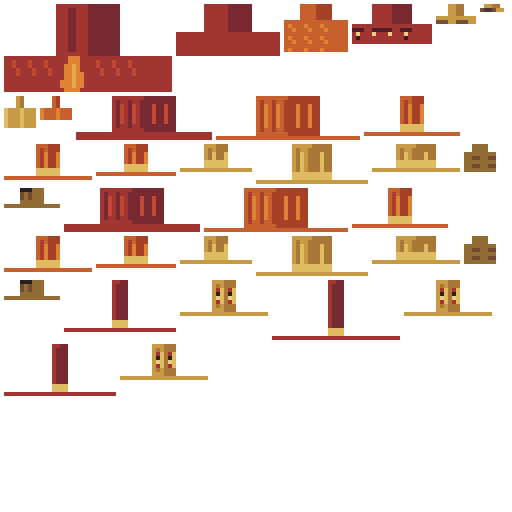
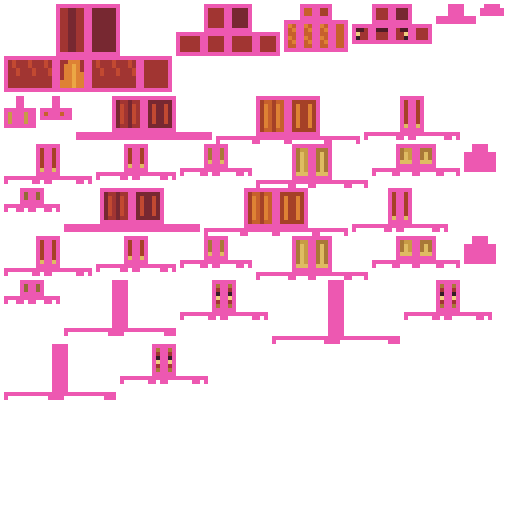
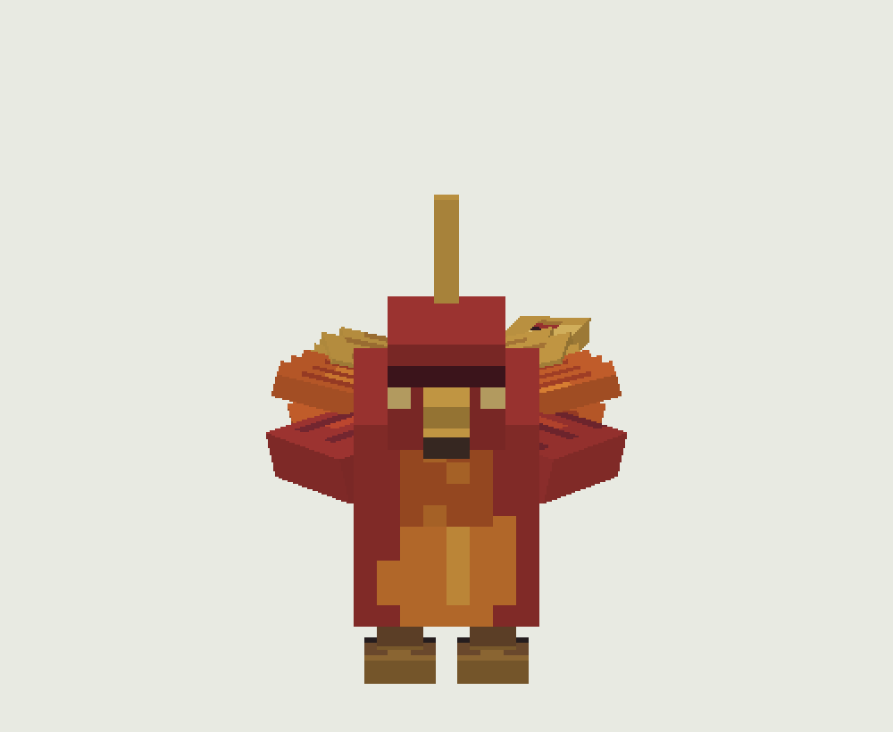
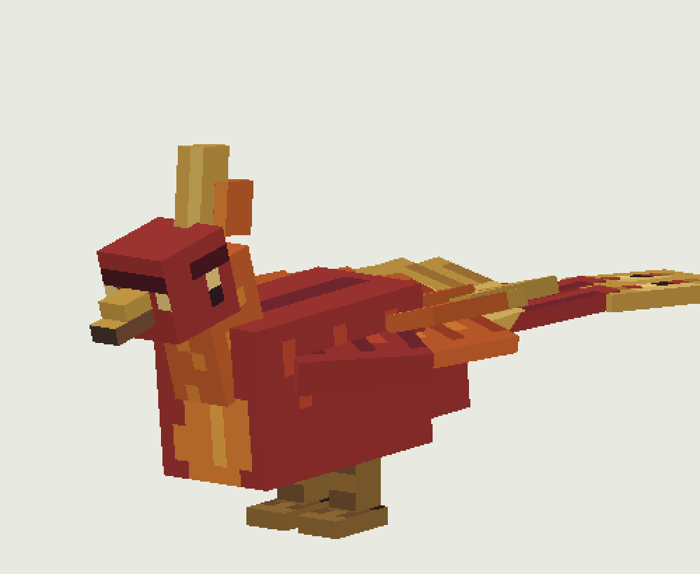
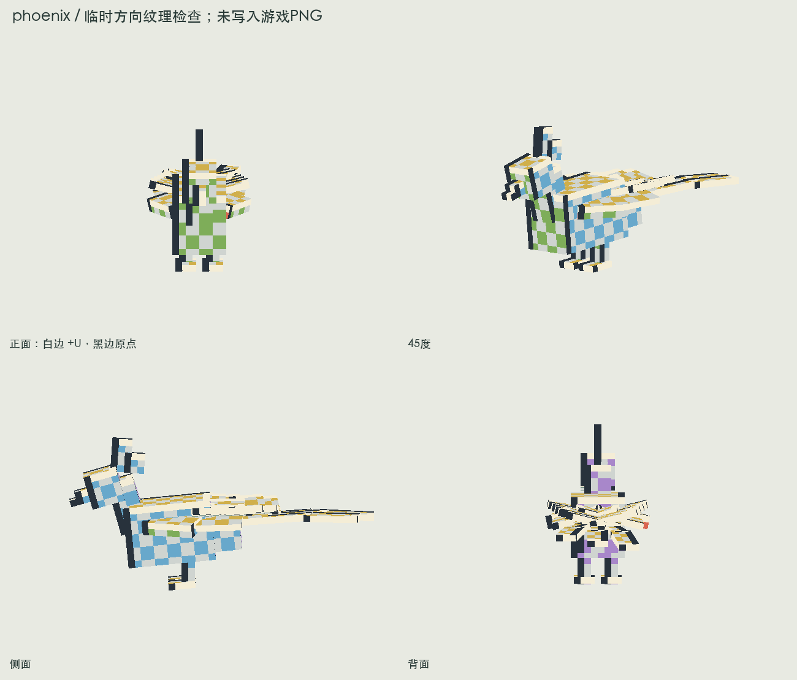
方向检查图只用于离线验证，正式PNG没有测试棋盘。
检查与交付边界
两套模型和贴图的权威生成源可重复导出相同结果；474个UV面无越界、无重叠且已绘制；240个原生姿态全部烘焙并输出。classes与reobfJar通过，JAR内纹理哈希与源文件一致。没有启动或关闭现有客户端，没有操作声音和亮度。实机加载、自然战斗和多人表现仍待验证。
参考记录为四足102条／57模型族、鸟类106条／22模型族，包含同骨架物种与毛色变体。它们不是208套独立模型；此前1000套独立生物的研究要求仍未完成，未据此删除提示词。